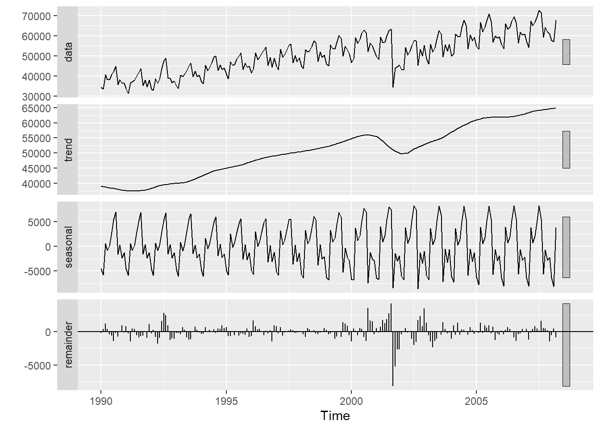

Chapter 4 Time series decomposition
IF your time series has a seasonal component to it, a useful visualization is the decomposition. We will be using the STL decomposition (which can only do the additive decomposition, NOT multiplicative!). The following code creates the decomposition and then plots it:
# Time Series Decomposition ...STL#
decomp_stl <- stl(Passenger, s.window = 7)
# Plot the individual components of the time series
plot(decomp_stl)
autoplot(decomp_stl)
You can pull off the different components (Seasonal, Trend or Remainder). The below command provides the first few rows of the decomposition (you can see what information is contained within the decomposition…season, trend and remainder).
head(decomp_stl$time.series)## seasonal trend remainder
## Jan 1990 -4526.7610 39081.77 -207.0131
## Feb 1990 -5827.5592 38942.75 420.8128
## Mar 1990 560.4986 38803.72 1213.7829
## Apr 1990 -802.2312 38664.69 404.5406
## May 1990 139.2095 38533.15 -423.3574
## Jun 1990 2953.8857 38401.61 -563.4910Which means we can overlay the original data with the trend component (which is the second column.)
autoplot(Passenger)+geom_line(aes(y=decomp_stl$time.series[,2]),color="blue")
Notice that the trend component is VERY similar to the “seasonally adjusted” data! Do you know what the difference between the two series is?
seas_adj=Passenger-decomp_stl$time.series[,1]
autoplot(Passenger) +
geom_line(aes(y=decomp_stl$time.series[,2]),color="blue") +
geom_line(aes(y=seas_adj),color="orange")
Another interesting plot is the subseries plot. This looks at the individual series (in this case, the series for January, the series for February, etc….).
# Plot seasonal subseries by months
ggsubseriesplot(Passenger) Just a quick note. STL ONLY does additive seasonal decomposition. There is a decompose library that will do both additive AND multiplicative decomposition.
Just a quick note. STL ONLY does additive seasonal decomposition. There is a decompose library that will do both additive AND multiplicative decomposition.
4.1 Self-study
Here is something to get you started if you want to take a look at the X13 decomposition!
decomp_x13=seas(Passenger)
summary(decomp_x13)##
## Call:
## seas(x = Passenger)
##
## Coefficients:
## Estimate Std. Error z value Pr(>|z|)
## Leap Year 1.610e+03 4.003e+02 4.021 5.79e-05 ***
## Weekday 5.586e+01 1.890e+01 2.956 0.00312 **
## LS1992.Jun 4.006e+03 8.439e+02 4.747 2.07e-06 ***
## LS1992.Oct -3.511e+03 8.409e+02 -4.176 2.97e-05 ***
## LS2001.Sep -1.580e+04 8.633e+02 -18.296 < 2e-16 ***
## LS2001.Nov 5.492e+03 8.629e+02 6.365 1.96e-10 ***
## AO2002.Dec 4.412e+03 8.402e+02 5.251 1.51e-07 ***
## MA-Nonseasonal-01 5.073e-01 5.991e-02 8.468 < 2e-16 ***
## MA-Seasonal-12 4.981e-01 6.133e-02 8.121 4.62e-16 ***
## ---
## Signif. codes: 0 '***' 0.001 '**' 0.01 '*' 0.05 '.' 0.1 ' ' 1
##
## SEATS adj. ARIMA: (0 1 1)(0 1 1) Obs.: 219 Transform: none
## AICc: 3501, BIC: 3533 QS (no seasonality in final): 0
## Box-Ljung (no autocorr.): 22.77 Shapiro (normality): 0.9914
## Messages generated by X-13:
## Warnings:
## - At least one visually significant trading day peak has been
## found in one or more of the estimated spectra.## Neat R shiny application....run OUTSIDE of RMarkdown
#view(decomp_x13)